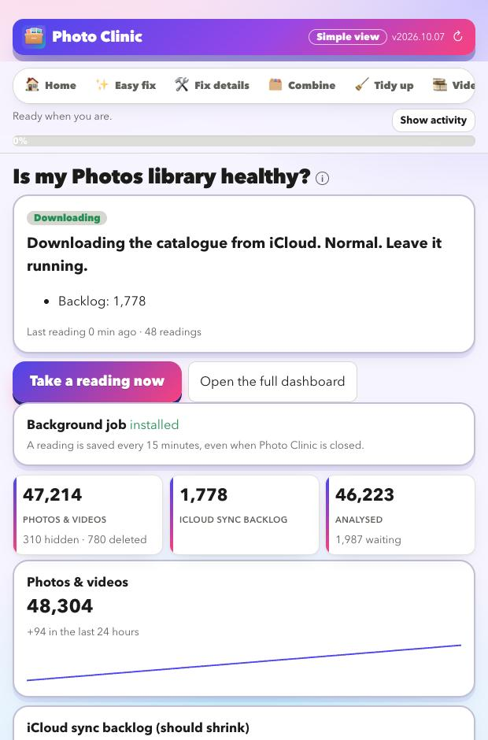

Monitor your Photos library
A reading every 15 minutes
Big iCloud libraries can take days or weeks to sync, and from the outside it is hard to tell working from stuck. Photo Clinic records how your library is doing and shows the trend, so you do not have to guess.
Download for Mac
A plain verdict
One word and one sentence on what to do. It only reads; it never writes to your library.
What it records
Your library
Photos and videos (visible, hidden, deleted), albums and how many have been analysed.
iCloud's sync backlog
The size of the queue iCloud works through. It should shrink over time.
Errors
iCloud error counts, and how busy the sync process is.
Trends
A chart for each number, the change over 24 hours, and a warning if the backlog has not moved for hours.
It never guesses
- Anything it cannot measure is shown as unknown, not as good or bad.
- A steady heartbeat in the logs is not treated as progress or as a stall.
- Stuck needs all three: the merge has run for hours, the backlog has not moved, and the sync process is busy. Then it tells you to leave the library alone and keep the evidence.
When it runs
- While Photo Clinic is open, it takes a reading every 15 minutes. You can leave it in the background.
- A separate background job is optional, so readings continue while the app is closed.
- A full dashboard page adds a gap check against iCloud.com, a by-year breakdown and your own to-do list.
Look at your library for free
Download it, point it at your photos, and read the preview. That costs nothing and changes nothing.
Download for MacFree · Apple silicon Macs · signed and checked by Apple